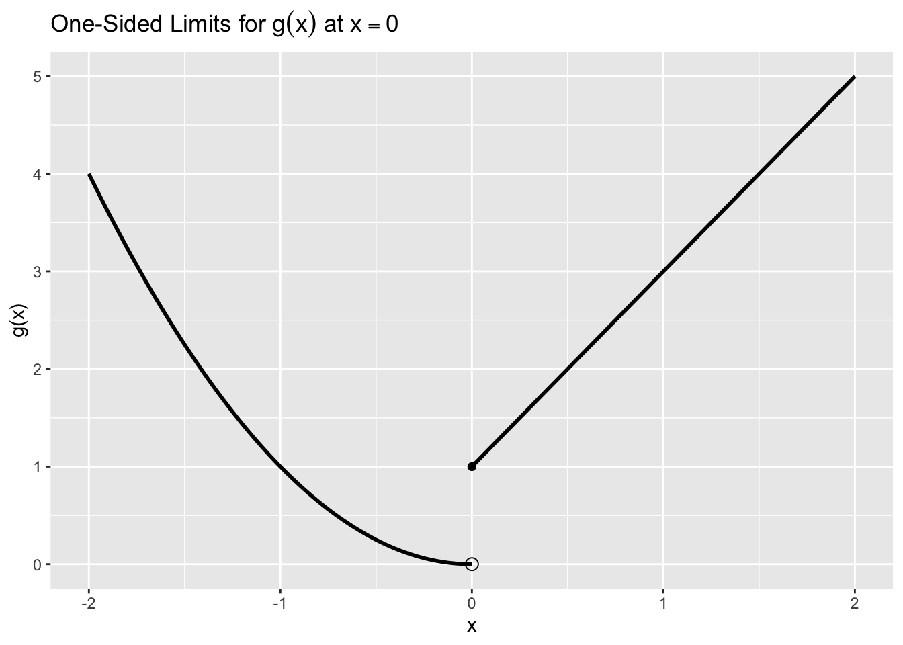
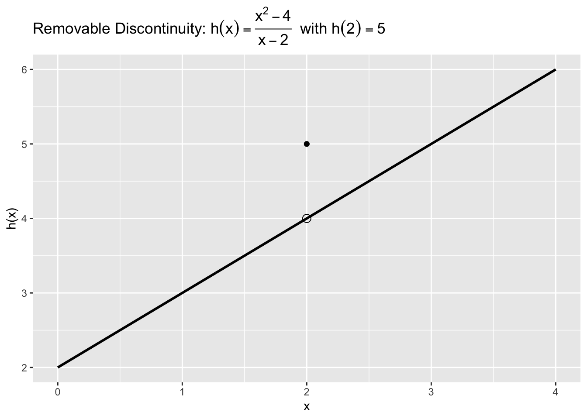
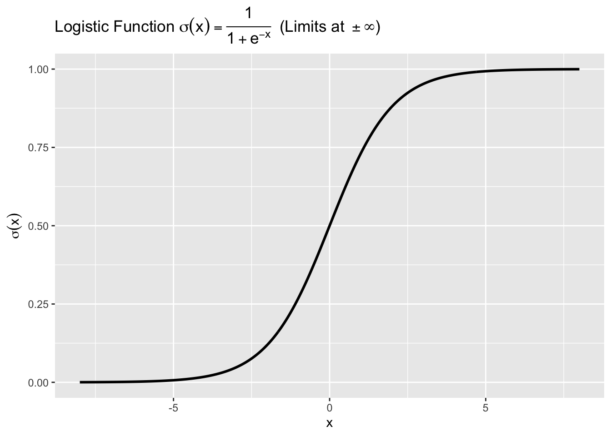
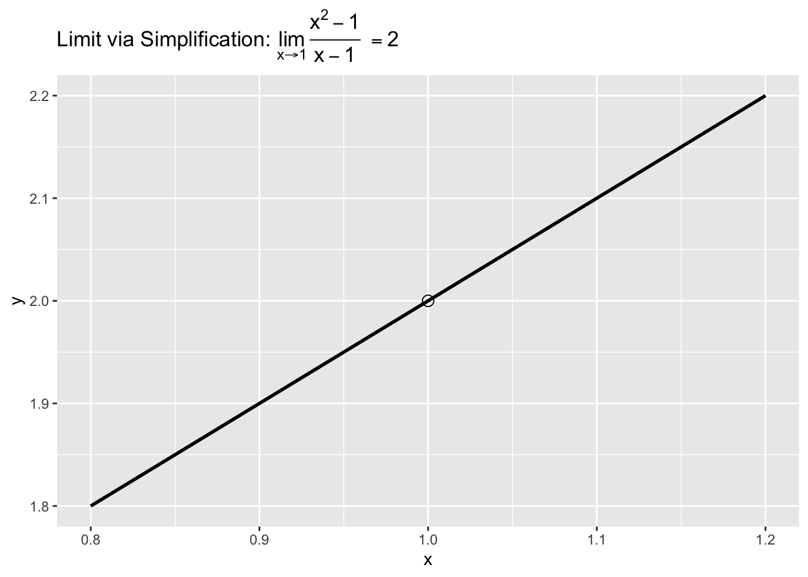

In this lesson we build a practical foundation for limits and continuity—the ideas that prepare us for derivatives. Rather than proofs, we focus on intuition, pictures, and short computations you can run in R. Limits capture what a function is approaching near a point (even if it is not defined there), while continuity captures when a function has no breaks, jumps, or holes.
We will use tables and plots to see how functions behave near interesting points, interpret one‑sided limits, and spot common discontinuities (removable holes, jumps, vertical asymptotes). These skills will matter later when we reason about rates of change and when we choose appropriate models or transformations for data.
10.2 1. Intuition for Limits
A limit describes the value a function approaches as \(x\) gets close to some point (from the left, from the right, or from both sides). Even if \(f(c)\) is undefined (or defined oddly), the limit \(\lim\limits_{x\to c} f(x)\) can still exist.
10.2.1 1.1 Numerical Approach (Tables)
A simple way to build intuition is to compute values near the point. Consider \[
f(x) = \frac{x^2 - 1}{x - 1},
\] which is undefined at \(x=1\) but simplifies to \(f(x) = x + 1\) for \(x \neq 1\).
The code below creates a small table of \(x\)‑values near 1 and the corresponding \(f(x)\) values. It helps us see what \(f(x)\) is approaching as \(x\to 1\).
Code
# Purpose: Build a small table of x values near 1 and compute f(x) = (x^2 - 1)/(x - 1).# This illustrates how a table can suggest the limit even if the function is undefined at x=1.# Define f(x) carefully to avoid dividing by zerof <-function(x) {# For x exactly 1, return NA to reflect the hole (undefined)ifelse(abs(x -1) < .Machine$double.eps, NA_real_, (x^2-1) / (x -1))}# Choose points approaching 1 from the left and rightx_vals <-c(0.9, 0.99, 0.999, 1, 1.001, 1.01, 1.1)y_vals <-f(x_vals)# Assemble a small data frametbl <-data.frame(x = x_vals, `f(x)`= y_vals)tbl
Key Insight: The table suggests \(f(x)\) is near \(2\) as \(x \to 1\) from both sides. That is, \(\lim\limits_{x\to 1} \dfrac{x^2-1}{x-1} = 2\), even though \(f(1)\) is undefined.
10.2.2 1.2 Graphical Approach (One‑Sided Limits)
We can also inspect left‑hand and right‑hand behavior. Consider the piecewise function \[
g(x) = \begin{cases}
x^2, & x < 0, \\
2x + 1, & x \ge 0.
\end{cases}
\] The left‑hand limit at 0 is \(\lim\limits_{x\to 0^-} g(x) = 0\), while the right‑hand limit is \(\lim\limits_{x\to 0^+} g(x) = 1\). Since they differ, \(\lim\limits_{x\to 0} g(x)\)does not exist.
The code below plots \(g(x)\) near 0 and marks the endpoints to highlight one‑sided limits.
Code
# Purpose: Plot a piecewise function g(x) to visualize one-sided limits at x=0.# We'll draw each piece and add an open/closed marker at x=0 to show the mismatch.library(ggplot2)library(latex2exp)# Create data for two piecesx_left <-seq(-2, 0, by =0.01)y_left <- x_left^2x_right <-seq(0, 2, by =0.01)y_right <-2* x_right +1df_left <-data.frame(x = x_left, y = y_left)df_right <-data.frame(x = x_right, y = y_right)# Base plot with both pieces in blackp <-ggplot() +geom_line(data = df_left, aes(x, y), color ="black", linewidth =1) +geom_line(data = df_right, aes(x, y), color ="black", linewidth =1) +# Add open circle at (0, 0) for the left piece (limit from the left)geom_point(aes(x =0, y =0), color ="black", shape =1, size =3) +# Add closed circle at (0, 1) for the right piece (function value at 0)geom_point(aes(x =0, y =1), color ="black", shape =16, size =2) +labs(title =TeX("One-Sided Limits for $g(x)$ at $x=0$"),x ="x", y ="g(x)" )p

Key Insight: The left‑hand and right‑hand limits are different (0 vs 1), so the two‑sided limit does not exist at \(x=0\). One‑sided limits help diagnose whether a function is “coming together” at a point.
10.3 2. Continuity (Informal)
Informally, a function is continuous at \(x=c\) if three things happen smoothly at once:
\(f(c)\) is defined (no hole at \(x=c\)),
\(\lim\limits_{x\to c} f(x)\) exists (left and right agree),
and the limit equals the function value: \(\lim\limits_{x\to c} f(x) = f(c)\).
Common ways continuity can fail:
Removable discontinuity (hole): limit exists but \(f(c)\) is missing or mismatched.
Jump discontinuity: left and right limits exist but are different.
Infinite/vertical asymptote: values blow up near \(c\).
10.3.1 2.1 Removable Discontinuity (Hole) vs. Mismatch
Consider \[
h(x) = \frac{x^2 - 4}{x - 2},\quad x \ne 2, \qquad \text{and define } h(2) = 5.
\] For \(x \ne 2\), \(h(x)\) simplifies to \(x + 2\), so \(\lim\limits_{x\to 2} h(x) = 4\). But \(h(2) = 5\), so \(h\) is not continuous at \(x=2\) (the limit and function value disagree).
The code below plots \(h(x)\) as the line \(y=x+2\) with a hole at \(x=2\), and adds the mismatched filled point \((2,5)\).
Code
# Purpose: Visualize a removable discontinuity with a mismatched function value.# Fix: Use annotate("point", ...) for single-point layers so they don't inherit the 401-row data.library(ggplot2)library(latex2exp)# Grid of x values (the line y = x + 2)x_vals <-seq(0, 4, by =0.01)y_vals <- x_vals +2df_line <-data.frame(x = x_vals, y = y_vals)ggplot(df_line, aes(x, y)) +geom_line(color ="black", linewidth =1) +annotate("point", x =2, y =4, shape =1, color ="black", size =3) +# open circle (the hole)annotate("point", x =2, y =5, shape =16, color ="black", size =2) +# filled point (mismatch)labs(title =TeX("Removable Discontinuity: $h(x)=\\frac{x^2-4}{x-2}$ with $h(2)=5$"),x ="x", y ="h(x)" )

Key Insight: The limit at \(x=2\) is \(4\) (what the line approaches), but the function value is \(5\). Because \(\lim\limits_{x\to 2} h(x) \ne h(2)\), \(h\) is not continuous at \(x=2\). If we redefined \(h(2)\) to be \(4\), continuity would be restored (the “hole” would be filled correctly).
10.3.2 2.2 Asymptotic Behavior and Continuity on Domains
Limits also describe end behavior. For instance, the logistic function \[
\sigma(x) = \frac{1}{1 + e^{-x}}
\] satisfies \(\lim\limits_{x\to -\infty} \sigma(x) = 0\) and \(\lim\limits_{x\to +\infty} \sigma(x) = 1\). It is continuous for all real \(x\), with horizontal asymptotes at \(y=0\) and \(y=1\).
The code below plots \(\sigma(x)\) and shows its S‑shape and asymptotes.
Code
# Purpose: Plot the logistic function to illustrate continuous behavior and horizontal asymptotes.# Fix: Properly escape LaTeX backslashes (\\sigma, \\frac, \\pm, \\infty) inside TeX().library(ggplot2)library(latex2exp)# Create x and y for the logistic functionx <-seq(-8, 8, by =0.05)sigma <-1/ (1+exp(-x))df_sig <-data.frame(x = x, y = sigma)ggplot(df_sig, aes(x, y)) +geom_line(color ="black", linewidth =1) +labs(title =TeX("Logistic Function $\\sigma(x)=\\frac{1}{1+e^{-x}}$ (Limits at $\\pm\\infty$)"),x ="x",y =TeX("$\\sigma(x)$") )

Key Insight: The logistic is smooth and continuous for all \(x\). Its limits at infinity describe the long‑run behavior (\(0\) and \(1\)), which is useful for modeling probabilities or bounded responses.
10.4 3. Computing Limits Safely (When and How)
In many practical cases you can compute limits by direct substitution if the function is continuous at that point (e.g., polynomials, exponentials, logistics, sums/products/quotients of continuous functions where denominators are nonzero). When direct substitution yields an indeterminate form like \(\tfrac{0}{0}\), try to algebraically simplify (e.g., factor, cancel), then substitute.
10.4.1 3.1 Example: Cancel a Factor (Algebraic Simplification)
Consider \[
\lim\limits_{x\to 1} \frac{x^2 - 1}{x - 1}.
\] Direct substitution gives \(\tfrac{0}{0}\) (indeterminate). Factor the numerator and cancel \(x-1\) (for \(x\ne 1\)): \[
\frac{(x-1)(x+1)}{x-1} = x+1,\quad x\ne 1.
\] Now substitute \(x=1\) in the simplified expression to get the limit: \(2\).
The code below compares the original expression and the simplified one by evaluating near \(x=1\) and plotting the simplified line with a hole at \(x=1\).
Code
# Purpose: Compare original vs. simplified expressions near x=1 and visualize the removable hole.# Fix: Use annotate("point", ...) for the single marker so it doesn't inherit the full data frame.library(ggplot2)library(latex2exp)# Original and simplified definitionsorig <-function(x) ifelse(abs(x -1) < .Machine$double.eps, NA_real_, (x^2-1) / (x -1))simp <-function(x) x +1# valid for all x; note the original is undefined at x=1# Evaluate near x=1x_near <-seq(0.8, 1.2, by =0.01)df_comp <-data.frame(x = x_near,orig =orig(x_near),simp =simp(x_near))# Plot the simplified line with an open circle at x=1 (y=2)ggplot(df_comp, aes(x, simp)) +geom_line(color ="black", linewidth =1) +annotate("point", x =1, y =2, shape =1, color ="black", size =3) +labs(title =TeX("Limit via Simplification: $\\lim_{x\\to 1}\\frac{x^2-1}{x-1} = 2$"),x ="x", y ="y" )

Key Insight: The graph shows the line \(y=x+1\) with a hole at \(x=1\). The limit is the \(y\)‑value that the curve approaches there (\(2\)), even though the original expression is undefined at \(x=1\).
10.4.2 3.2 Numerical Limits Without Algebra (When Needed)
Sometimes you only have a black‑box function (e.g., a trained model or a loss function). A small symmetric sequence approaching \(c\) can give a reliable numerical limit estimate.
Code
# Purpose: Estimate a limit numerically from symmetric x-values around c.# We'll use f(x)=sin(x)/x at c=0 (well-known limit equals 1), using radians.# Define f(x) with a safe value at exactly 0f_safe <-function(x) ifelse(abs(x) < .Machine$double.eps, 1, sin(x) / x)# Symmetric points approaching 0xpts <-c(-0.5, -0.2, -0.1, -0.05, 0, 0.05, 0.1, 0.2, 0.5)ypts <-f_safe(xpts)data.frame(x = xpts, `f(x)`= ypts)
Key Insight: The values cluster around \(1\) as \(x\to 0\), matching the known limit \(\lim\limits_{x\to 0} \dfrac{\sin x}{x} = 1\). Numerical checks are especially handy when algebraic forms are messy or unavailable.
10.5 4. Why Limits & Continuity Matter in Data Science
Modeling choices: Knowing where functions are continuous helps avoid undefined expressions (e.g., dividing by near‑zero features) and informs safe transformations (logs require positive inputs; beware of zeros/negatives).
Stability of algorithms: Optimization methods and gradient‑based learning assume reasonably smooth behavior; discontinuities can cause instability.
Asymptotics & saturation: Limits at \(\pm\infty\) describe long‑run behavior (e.g., logits saturate near 0/1), guiding interpretation of predictions and regularization.
Diagnostics: Plots and small tables near “problem points” can reveal holes, jumps, or exploding values before they derail an analysis.
10.6 Practice Problems
Use a small table (5–7 points) to estimate \(\lim\limits_{x\to 3} \dfrac{x^2 - 9}{x - 3}\). What do you suspect the exact limit is, and why?
Consider the piecewise function \(p(x) = \begin{cases} 2 - x, & x < 1, \\ x^2, & x \ge 1. \end{cases}\)
Compute \(\lim\limits_{x\to 1^-} p(x)\) and \(\lim\limits_{x\to 1^+} p(x)\).
Does \(\lim\limits_{x\to 1} p(x)\) exist? Is \(p\) continuous at \(x=1\)? Explain.
Let \(q(x) = \dfrac{x^2 - 4x + 4}{x - 2}\) for \(x \ne 2\).
What is \(\lim\limits_{x\to 2} q(x)\)?
Define a value \(q(2)\) that would make \(q\) continuous at \(x=2\).
Plot the logistic function \(\sigma(x)=\dfrac{1}{1+e^{-x}}\) on \([-8,8]\) and mark approximate horizontal asymptotes on your graph. Briefly describe the practical meaning of those limits.
10.7 In this lesson, you learned to
Use tables and plots to build intuition for limits near a point.
Distinguish one‑sided limits and diagnose when two‑sided limits fail.
Spot common discontinuities (removable holes, jumps, asymptotes) and relate them to continuity.
Compute simple limits by substitution when safe, or by algebraic simplification or numerical estimation when needed.
Connect limit/continuity ideas to modeling choices, algorithm stability, and interpretation.
10.8 Coming Up
Next time we connect limits to derivatives as rates of change. We will compute basic derivatives, relate slopes to sensitivity, and practice visualizing change on real‑world data.